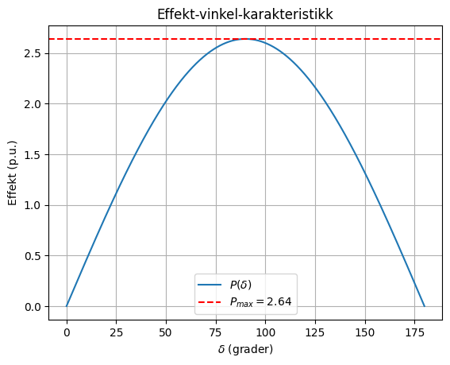
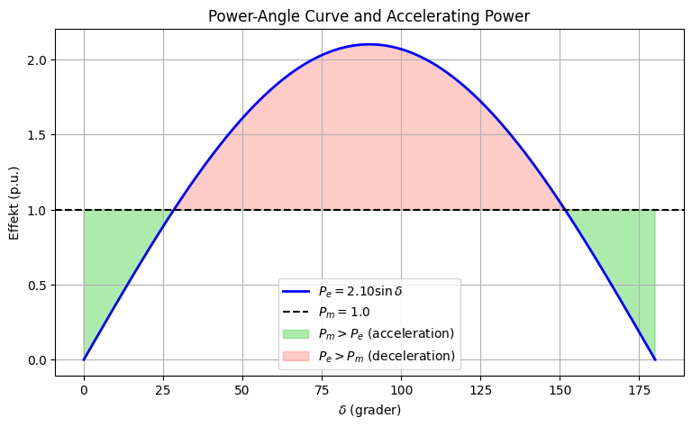
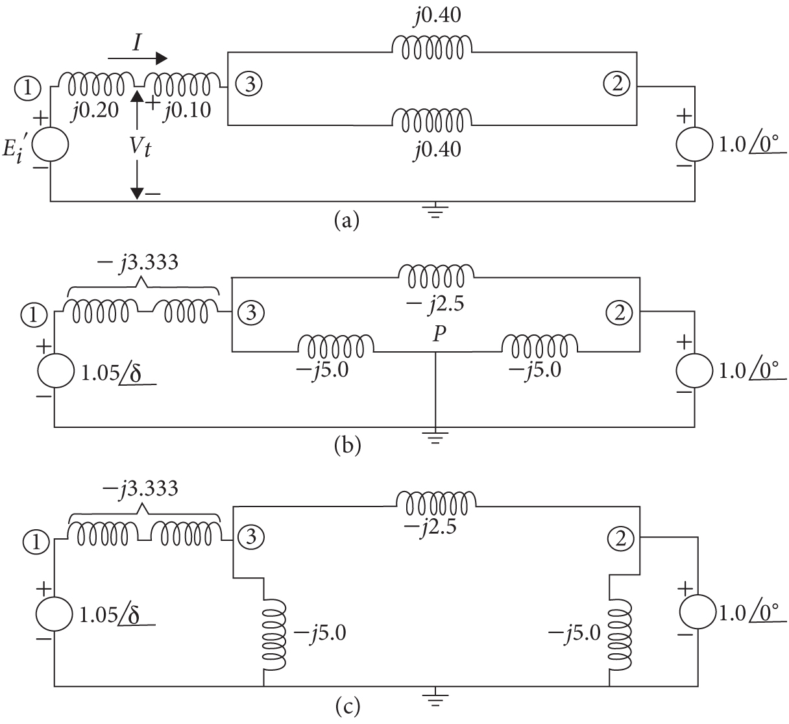

Chapter 14: Power System Stability#

When ac generators were driven by reciprocating steam engines, one of the major problems in the operation of machinery was hunting. The periodic variations in the torque applied to the generators caused periodic variations in speed.
The resulting periodic variations in voltage and frequency were transmitted to the motors connected to the system. Oscillations of the motors caused by the variations in voltage and frequency sometimes caused the motors to lose synchronism entirely if their natural frequency of oscillation coincided with the frequency of oscillation caused by the engines driving the generators.
Damper windings were first used to minimize hunting by the damping action of the losses resulting from the currents induced in the damper windings by any relative motion between the rotor and the rotating field set up by the armature current.
The use of turbines has reduced the problem of hunting, although it is still present where the prime mover is a diesel engine. Maintaining synchronism between the various parts of a power system becomes increasingly difficult, however, as the systems and interconnections between systems continue to grow.
(a) Generator

(b) Motor
14.1 THE STABILITY PROBLEM#
Power system stability may be defined as that property of the system which enables the synchronous machines of the system to respond to a disturbance from a normal operating condition so as to return to a condition where their operation is again normal.
Stability studies are usually classified into three types depending upon the nature and order of magnitude of the disturbance. These are
transient stability
dynamic stability
steady-state stability
Today, transient stability studies constitute the major analytical approach to the study of power-system electromechanical dynamic behavior. Transient stability studies are aimed at determining if the system will remain in synchronism following major disturbances such as transmission system faults, sudden load changes, loss of generating units, or line switching. Such studies began more than 50 years ago but were then confined to consideration of the dynamic problems of not more than two machines. Present-day power systems are vast, heavily interconnected systems with many hundreds of machines which can dynamically interact through the medium of their extra-high voltage and ultra-high voltage networks. These machines have associated excitation systems and turbine-governing control systems which, in some but not all cases, must be modeled in order to properly reflect the correct dynamic response of the power system to certain system disturbances.
Dynamic and steady-state stability studies are less extensive in scope and involve one or just a few machines undergoing slow or gradual changes in operating conditions. Therefore, dynamic and steady-state stability studies concern the stability of the locus of essentially steady-state operating points of the system. The distinction made between steady-state and dynamic stability studies is really artificial since the stability problems are the same in nature; they differ only in the degree of detail used to model the machines. In dynamic stability studies, the excitation system and turbine-governing system are represented along with synchronous machine models which provide for flux-linkage variation in the machine air-gap. Steady-state stability problems use a very simple generator model which treats the generator as a constant voltage source. The solution technique of steady-state and dynamic stability problems is to examine the stability of the system under incremental variations about an equilibrium point. The nonlinear differential and algebraic equations for the system can be replaced by a set of linear equations which are then solved by methods of linear analysis to determine whether the machine or machines will remain in synchronism following small changes from the operating point.
Transient stability studies are much more commonly undertaken thereby reflecting their greater importance in practice. Such problems involve large disturbances which do not allow the linearization process to be used and the nonlinear differential and algebraic equations must be solved by direct methods or by iterative step-by-step procedures. Transient stability problems can be subdivided into first-swing and multiswing stability problems. First-swing stability is based on a reasonably simple generator model without representation of control systems. Usually the time period under study is the first second following a system fault. If the machines of the system are found to remain in synchronism within the first second, the system is said to be stable. Multiswing stability problems extend over a longer study period and therefore must consider effects of generator control systems which affect machine performance during the extended time period. Machine models of greater sophistication must be represented to reflect proper behavior.
In all stability studies, the objective is to determine whether or not the rotors of the machines being perturbed return to constant speed operation. Obviously, this means that the rotor speeds must depart at least temporarily from synchronous speed. To facilitate computation, three fundamental assumptions are made in all stability studies:
Only synchronous frequency currents and voltages are considered in the stator windings and the power system. Consequently, dc offset currents and harmonic components are neglected.
Symmetrical components are used in the representation of unbalanced faults.
Generated voltage is considered unaffected by machine speed variations.
These assumptions permit the use of phasor algebra for the transmission network and solution by load-flow techniques using 60-Hz parameters. Also, negative- and zero-sequence networks can be incorporated into the positive-sequence network at the fault point. As we shall see, three-phase balanced faults are generally considered. However, in some special studies, circuit-breaker clearing operations may be such that consideration of unbalanced conditions is unavoidable.
14.2 ROTOR DYNAMICS AND THE SWING EQUATION#
The equation governing the motion of the rotor of a synchronous machine is based on the elementary principle in dynamics which states that accelerating torque is the product of the moment of inertia of the rotor times its angular acceleration. In the MKS system of units, this equation can be written for the synchronous generator in the form
where the symbols have the following meanings:
\(J\) : the total moment of inertia of the rotor masses, in kg-m²
\(\theta_m\) : the angular displacement of the rotor with respect to a stationary axis, in mechanical radians
\(t\) : time, in seconds
\(T_m\) : the mechanical or shaft torque supplied by the prime mover less retarding torque due to rotational losses, in N-m
\(T_e\) : the net electrical or electromagnetic torque, in N-m
\(T_a\) : the net accelerating torque, in N-m
The mechanical torque \(T_m\) and the electrical torque \(T_e\) are considered positive for the synchronous generator which tends to accelerate the rotor in the positive \(\theta_m\) direction of rotation as shown in Fig. 14.1a. Under steady-state operation of the generator \(T_m\) and \(T_e\) are equal and the accelerating torque \(T_a\) is zero. In this case there is no acceleration or deceleration of the rotor masses and the resultant constant speed is the synchronous speed. The rotating masses which include the rotor of the generator and the prime mover are said to be in synchronism with the other machines operating at synchronous speed in the power system. The prime mover may be a hydro turbine or a steam turbine for which models of different levels of complexity exist to represent their effect on \(T_m\). In this text \(T_m\) is considered constant at any given operating condition. This assumption is a fair one for generators even though input from the prime mover is controlled by governors. Governors do not act until after a change in speed is sensed and so are not considered effective during the time-period in which rotor dynamics are of interest in our stability studies here. The electrical torque \(T_e\) corresponds to the net air-gap power in the machine and thus accounts for the total output power of the generator plus \(I^2R\) losses in the armature winding. In the synchronous motor the direction of power flow is opposite to that in the generator. Accordingly, for a motor both \(T_m\) and \(T_e\) in Eq. (14.1) are reversed in sign as shown in Fig. 14.1b. \(T_e\) then corresponds to the air-gap power supplied by the electrical system to drive the rotor while \(T_m\) represents the counter-torque of the load and rotational losses tending to retard the rotor.

Since \(\theta_m\) is measured with respect to a stationary reference axis on the stator, it is an absolute measure of rotor angle. Consequently, it continuously increases with time even at constant synchronous speed. Since the rotor speed relative to synchronous speed is of interest it is more convenient to measure the rotor angular position with respect to a reference axis which rotates at synchronous speed. Therefore, we define
where \(\omega_{sm}\) is the synchronous speed of the machine in mechanical radians per second and \(\delta_m\) is the angular displacement of the rotor, in mechanical radians.
Summary of the Swing Equation Derivation#
Starting from the rotor-angle definition
where:
\(\theta_m\) is the absolute mechanical rotor angle,
\(\omega_{sm}\) is the synchronous mechanical angular velocity,
\(\delta_m\) is the rotor angle measured relative to a synchronously rotating reference frame.
Differentiating with respect to time gives
Since \(\omega_{sm}\) is constant,
Substituting into the rotor dynamic equation
results in
Define the rotor angular velocity as
Using the relationship
and multiplying the torque equation by \(\omega_m\) gives
where:
\(P_m\) is the mechanical input power,
\(P_e\) is the electrical output power,
\(P_a\) is the accelerating power.
Introducing the coefficient
leads to the classical form
This equation states that rotor acceleration is determined by the imbalance between mechanical input power and electrical output power.
Connection to Modern Notation#
In modern power-system stability analysis, the swing equation is more commonly written as
where \(H\) is the inertia constant and \(\omega_s\) is the synchronous electrical angular velocity.
The derivation above therefore represents the transition from Newton’s rotational dynamics to the classical swing equation used in transient stability studies.
Inertia Constant H and the Swing Equation#
Definition of the Inertia Constant#
The inertia constant is defined as
where
\(H\) is the inertia constant (MJ/MVA)
Stored kinetic energy is evaluated at synchronous speed
Machine rating is the three-phase machine rating in MVA
Relationship Between M and H#
The inertia coefficient \(M\) can be related to \(H\) through
Per-Unit Swing Equation#
Rotor Angle in Electrical Radians#
Using
we obtain
when \(\delta\) is expressed in electrical radians.
Rotor Angle in Electrical Degrees#
The conversion between radians and degrees is
Therefore,
Substituting into the swing equation gives
when \(\delta\) is expressed in electrical degrees.
Special Cases#
50 Hz System#
60 Hz System#
Worked Example#
Assume a generator with
\(H=5\text{ s}\)
\(f=50\text{ Hz}\)
\(P_m=1.0\) pu
\(P_e=0.8\) pu
The accelerating power is
Solution Using Electrical Degrees#
Solution Using Electrical Radians#
Verification#
The results are therefore consistent.
Physical Interpretation#
\(P_m>P_e\) implies rotor acceleration.
\(P_m=P_e\) implies constant speed.
\(P_m<P_e\) implies rotor deceleration.
In this example the mechanical input power exceeds the electrical output power, resulting in a positive accelerating power and an increasing rotor angle.
Summary of Sections 14.2 and 14.3#
Swing Equation as Two First-Order Equations#
The swing equation is a second-order differential equation describing the rotor dynamics of a synchronous machine.
For numerical solution and stability analysis, it is often written as two coupled first-order differential equations.
The first equation relates rotor speed deviation to accelerating power:
The second equation relates the rotor angle to the speed deviation:
where:
\(H\) is the inertia constant,
\(\omega_s\) is the synchronous speed,
\(\omega\) is the rotor speed,
\(\delta\) is the rotor angle,
\(P_m\) is the mechanical input power,
\(P_e\) is the electrical output power.
Solving these equations yields the swing curve, which shows how rotor angle varies with time after a disturbance.
Inspection of the swing curves of all machines in a power system indicates whether synchronism is maintained.
Conversion of Inertia Constant to a Common System Base#
In a multimachine stability study, all quantities must be expressed on a common MVA base.
The inertia constant of an individual machine can be converted from machine base to system base using
where:
\(H_{\text{mach}}\) is the inertia constant on machine base,
\(H_{\text{system}}\) is the inertia constant on system base,
\(S_{\text{mach}}\) is the machine rating,
\(S_{\text{system}}\) is the selected system base.
This conversion ensures that all machine swing equations are expressed on the same per-unit base.
Practical Remarks#
The coefficient M is rarely used in modern practice.
Most power-system stability studies use H because it varies over a narrower range and is easier to compare between machines.
Manufacturers may also specify inertia data using WR^2, where W is the rotating weight and R is the radius of gyration. This quantity can be converted to the corresponding moment of inertia and then used to determine H.
Summary of Inertia Constants and Example 14.1#
Typical Inertia Constants#
The page presents representative ranges of inertia constants H (MJ/MVA) for various synchronous machines.
General observations:
Steam turbine generators tend to have relatively large inertia constants.
Slow-speed hydro generators typically have lower values.
Synchronous condensers have moderate inertia values.
Synchronous motors exhibit a wide range depending on the connected load and the presence of flywheels.
Rotational Kinetic Energy#
The derivation begins with the classical expression for rotational kinetic energy:
Using the manufacturer quantity WR^2 and rotational speed in revolutions per minute, kinetic energy is expressed in foot-pounds.
Conversion to Inertia Constant H#
The kinetic energy at synchronous speed is converted to megajoules and divided by machine MVA rating according to the definition
where \(S_{mach}\) is the machine rating in MVA.
Final Practical Formula#
After unit conversions and algebraic simplification, the following engineering formula is obtained:
where:
\(H\) is in MJ/MVA,
\(WR^2\) is in lb-ft^2,
\(r/min\) is rotational speed,
\(S_{mach}\) is machine rating in MVA.
Significance#
This formula provides a direct way to estimate the inertia constant from manufacturer data, allowing the machine to be incorporated into transient stability studies and swing-equation models.
Equivalent Generator Representation in Stability Studies#
In large power systems, several generators located in the same power plant may respond almost identically to a disturbance. When their rotor angles remain closely synchronized, the generators can be represented by a single equivalent machine.
Individual Swing Equations#
For two generators connected to the same bus, the swing equations can be written as
and
If the generators swing together, then
Adding the two equations gives
Defining
and
the equivalent swing equation becomes
This equation has the same form as the swing equation of a single machine and can therefore be used to represent the dynamics of an entire power plant.
Example: Equivalent Inertia Constant#
Consider two generating units operating in parallel.
Unit 1#
Rated power: 500 MVA
Power factor: 0.85
Voltage: 20 kV
Speed: 3600 r/min
Inertia constant:
Unit 2#
Rated power: 1333 MVA
Power factor: 0.9
Voltage: 22 kV
Speed: 1800 r/min
Inertia constant:
Equivalent Inertia Constant on a Common Base#
For machines operating on a common MVA base,
Substituting the ratings,
General Formula#
For \(n\) coherent generators,
This equivalent machine approach significantly reduces the number of swing equations that must be solved in large-scale transient stability studies.
Coherent Machines and Equivalent Inertia Constant#
Example Result#
For two generators operating coherently, the total stored kinetic energy is obtained by adding the kinetic energies of the individual machines expressed on their own ratings:
Using
and
results in
On a 100 MVA base, the equivalent inertia constant becomes
Coherent Machines#
Machines whose rotor angles remain approximately equal during a disturbance are called coherent machines.
Because coherent machines swing together, they may be represented by a single equivalent machine with an equivalent inertia constant.
Importance in Stability Studies#
Representing a group of coherent generators as a single equivalent machine reduces the number of swing equations that must be solved.
This approach is widely used in transient stability studies of large interconnected power systems, where many generators may respond in a similar manner to a disturbance.
The simplification preserves the dominant electromechanical behavior while reducing computational complexity.
Non-Coherent Machines and Relative Swing Equation#
Relative Motion of Two Machines#
When two machines do not swing together, they are called non-coherent machines. Instead of studying the absolute rotor angles, it is often useful to study their relative angle.
Define
where:
\(\delta_1\) is the rotor angle of machine 1,
\(\delta_2\) is the rotor angle of machine 2.
Individual Swing Equations#
For the two machines,
and
Subtracting the two equations produces a differential equation describing the relative motion between the rotors.
Equivalent Two-Machine Form#
The resulting equation can be written in the standard swing-equation form
where the equivalent inertia constant is
Weighted Mechanical Power#
The equivalent mechanical power is
Weighted Electrical Power#
The equivalent electrical power is
Physical Interpretation#
The relative-angle formulation transforms two coupled swing equations into a single equation describing how the angle difference between the machines evolves.
If \(\delta_{12}\) remains bounded, the machines remain in synchronism. If \(\delta_{12}\) grows continuously, synchronism is lost.
Importance in Stability Studies#
This formulation is particularly useful for:
generator–generator stability studies,
generator–motor stability studies,
first-swing stability analysis,
reduction of multimachine systems to equivalent two-machine systems.
The relative-angle model is one of the fundamental tools used in transient stability analysis.
Two-Machine Relative Stability and Infinite Bus Concept#
Generator-Motor System#
Consider a two-machine system consisting of:
one synchronous generator,
one synchronous motor,
a transmission network represented mainly by reactances.
Any increase in generator output is absorbed by the motor. Under these assumptions, the mechanical and electrical powers can be represented by equal and opposite quantities.
Relative Swing Equation#
The relative-angle swing equation derived previously can be written as
where
is the relative rotor angle between the two machines.
The equation has exactly the same mathematical form as the swing equation of a single machine.
Stability as a Relative Property#
A key observation is that power-system stability is fundamentally a relative phenomenon.
The important quantity is not the absolute rotor angle of an individual machine but the angle difference between machines:
For a stable system, rotor-angle differences remain bounded and tend to decrease after the disturbance has been removed.
If the angle difference continues to increase, synchronism is lost.
Types of Stability Problems#
Many transient-stability studies can be interpreted as one of two basic problems:
Case 1: Machine Against an Infinite Bus#
A finite-inertia machine swings with respect to an infinite bus.
Case 2: Two Finite-Inertia Machines#
Two machines swing with respect to each other and the relative-angle formulation is used.
Infinite Bus Concept#
An infinite bus is an idealized network node having:
constant voltage magnitude,
constant voltage angle,
zero internal impedance,
infinite inertia.
Because of its infinite inertia, the infinite bus is unaffected by disturbances elsewhere in the system.
A large interconnected power system is often approximated as an infinite bus when studying the dynamics of a single generator.
Importance#
The relative-angle viewpoint greatly simplifies transient-stability analysis.
Many multimachine systems can be reduced to equivalent two-machine or machine-infinite-bus problems while retaining the essential electromechanical behavior of the original system.

14.4 The Power-Angle Equation#
Introduction#
In transient stability studies, the mechanical input power is commonly assumed to remain constant during the first moments following a disturbance.
This assumption is reasonable because turbine governors and prime-mover control systems react more slowly than the electrical system dynamics.
As a result, short-term rotor acceleration is primarily determined by variations in electrical output power.
Rotor Acceleration and Deceleration#
The swing equation can be written as
where
\(P_m\) is the mechanical input power,
\(P_e\) is the electrical output power,
\(H\) is the inertia constant,
\(\delta\) is the rotor angle.
The difference
is called the accelerating power.
Accelerating Rotor#
If
then
and the rotor accelerates.
Steady-State Operation#
If
then
and the machine operates at constant synchronous speed.
Decelerating Rotor#
If
then
and the rotor decelerates.
Importance of Electrical Power#
Because the mechanical power is assumed constant over the short time period of interest, transient stability behavior is largely determined by changes in
Any disturbance that changes electrical power transfer will affect rotor speed and rotor angle.
Consequently, understanding the relationship
is fundamental to transient stability analysis.
This relationship is known as the power-angle equation and forms the basis for the equal-area criterion and many classical stability methods.
Transition to the Classical Power-Angle Relationship#
For a generator connected to an infinite bus, the electrical power is later shown to depend on rotor angle according to
This equation is one of the most important relationships in transient stability analysis.

Power-Angle Equation from the Reduced Y-Bus Network#
Reduced Two-Bus Network#
After network reduction, the system can be represented by two internal machine nodes and the reduced bus-admittance matrix
The complex power injected at bus \(k\) is
For machine 1,
Phasor Definitions#
Let
Active and Reactive Power#
The active power of machine 1 becomes
The reactive power becomes
Relative Rotor Angle#
Define
Also define
Simplified Power-Angle Form#
Using the new variables, the electrical power becomes
The reactive power becomes
Classical Representation#
The active-power equation is commonly written as
where
and
Lossless Network Approximation#
For a predominantly reactive network,
and
The power-angle equation then reduces to
which is the classical relationship used in transient stability studies.
Connection to the Swing Equation#
Combining
with
gives the fundamental nonlinear model used in classical transient stability analysis and the equal-area criterion.
Classical Power-Angle Equation#
Electrical Output Power#
The electrical output power of the generator is represented by
When armature resistance and losses are neglected, the electrical power is equal to the active power injected by the generator into the network.
The relationship between electrical power and rotor angle is called the power-angle equation.
The graph of electrical power versus rotor angle is known as the power-angle curve.
General Power-Angle Equation#
For a reduced two-machine network, the electrical power can be written as
where:
\(P_c\) is a constant power term,
\(P_{\max}\) is the maximum transferable power,
\(\delta\) is the rotor-angle difference,
\(\gamma\) is a network-dependent phase shift.
For a fixed network configuration and constant voltage magnitudes, the quantities
are constants.
Lossless Network Approximation#
If transmission-system resistance is neglected, the network is represented by pure reactances.
Under this assumption,
and
The general power-angle equation therefore simplifies to
This is the classical power-angle equation used in transient stability analysis.
Maximum Transferable Power#
The maximum power transfer is given by
where:
\(E_1'\) is the transient internal voltage of machine 1,
\(E_2'\) is the transient internal voltage of machine 2 or the infinite-bus voltage,
\(X\) is the equivalent transfer reactance between the two voltages.
Interpretation#
The equation
shows that electrical power transfer depends entirely on the rotor-angle difference.
Important operating points are:
The point
therefore represents the maximum of the power-angle curve and plays a central role in transient stability studies and the equal-area criterion.
import math
# Spenningsmagnituder (pu)
E1 = float(input("Angi |E1'|: "))
E2 = float(input("Angi |E2'|: "))
# Fasevinkler (grader)
delta1 = float(input("Angi δ1 [grader]: "))
delta2 = float(input("Angi δ2 [grader]: "))
# Total reaktans mellom spenningskildene
X = float(input("Angi X: "))
# Vinkelforskjell
delta = math.radians(delta1 - delta2)
# Aktiv effekt
P = (E1 * E2 / X) * math.sin(delta)
print(f"\nδ = {delta1 - delta2:.2f}°")
print(f"P = {P:.4f} pu")
if P > 0:
print("Effekt overføres fra E1' til E2'")
elif P < 0:
print("Effekt overføres fra E2' til E1'")
else:
print("Ingen aktiv effektoverføring")
Angi |E1'|: 0.2
Angi |E2'|: 1.7
Angi δ1 [grader]: 5
Angi δ2 [grader]: 2
Angi X: 0.2
δ = 3.00°
P = 0.0890 pu
Effekt overføres fra E1' til E2'
import numpy as np
import matplotlib.pyplot as plt
E1 = 1.2
E2 = 1.1
X = 0.5
delta = np.linspace(0, np.pi, 1000)
P = (E1 * E2 / X) * np.sin(delta)
P_max = E1 * E2 / X
plt.plot(np.degrees(delta), P, label=r'$P(\delta)$')
plt.axhline(P_max, color='r', linestyle='--',
label=fr'$P_{{max}}={P_max:.2f}$')
plt.xlabel(r'$\delta$ (grader)')
plt.ylabel('Effekt (p.u.)')
plt.title('Effekt-vinkel-karakteristikk')
plt.grid(True)
plt.legend()
plt.show()


Example 14.3: Determination of the Power-Angle Equation#
Problem Description#
A synchronous generator is connected to a large power system represented as an infinite bus through parallel transmission lines.
Given operating conditions:
Generator output power:
Generator terminal voltage:
Infinite-bus voltage:
Generator transient reactance:
All reactances are expressed on a common system base.
Objective#
Determine the power-angle equation
for the operating condition.
Methodology#
The solution follows these steps:
Reduce the transmission network to an equivalent reactance.
Determine the equivalent transfer reactance
Compute the generator transient internal voltage
Apply the classical power-angle relationship
Because the receiving system is represented by an infinite bus,
General Result#
For a lossless network,
where
The remainder of the example is devoted to determining
and
from the network data and then substituting these values into the power-angle equation.
Importance#
This example illustrates the standard procedure used in transient-stability studies:
construct the equivalent network,
calculate the internal machine voltage,
determine the transfer reactance,
derive the corresponding power-angle curve.
The resulting power-angle equation is subsequently combined with the swing equation to assess rotor-angle stability following disturbances.
Example 14.3 – Full Solution#
Given Data#
The generator is connected to an infinite bus through two parallel transmission lines.
Given:
Transmission-line reactances:
Transformer reactance:
Step 1: Equivalent Network Reactance#
The two transmission lines are connected in parallel:
Therefore,
Step 2: Determine the Terminal-Voltage Angle#
The power-transfer equation between the terminal voltage and the infinite bus is
Substituting the known values:
Hence
and
Thus
In rectangular form,
Power-Angle Equation Derivation#
The output current from the generator is
Converting the voltages to rectangular form:
Thus
or
The transient internal voltage is
Expanding:
Therefore,
In polar form:
The total transfer reactance between the transient internal voltage and the infinite bus is
The power-angle equation is
Substituting the numerical values:
where
is the machine rotor angle with respect to the infinite bus.
Swing Equation and Operating Point#
The power-angle equation is plotted in Fig. 14.6.
The mechanical input power is
and intersects the electrical power-angle curve
at the operating angle
This is the initial angular position of the generator rotor corresponding to the given operating conditions.
The swing equation for the machine is
where:
\(H\) is the inertia constant in MJ/MVA,
\(f\) is the electrical frequency of the system,
\(\delta\) is the rotor angle in electrical degrees.
Under the operating conditions,
which is exactly equal to the mechanical input power:
Therefore,
and the acceleration is zero:
The machine is initially in steady-state equilibrium.
import numpy as np
import matplotlib.pyplot as plt
Pmax = 2.10
Pm = 1.0
delta_deg = np.linspace(0, 180, 1000)
delta_rad = np.radians(delta_deg)
Pe = Pmax * np.sin(delta_rad)
plt.figure(figsize=(9, 5))
plt.plot(delta_deg, Pe, 'b', lw=2,
label=r'$P_e=2.10\sin\delta$')
plt.axhline(Pm, color='k', ls='--',
label=r'$P_m=1.0$')
# Akselerasjon
plt.fill_between(
delta_deg, Pe, Pm,
where=(Pm > Pe),
color='limegreen',
alpha=0.4,
label=r'$P_m>P_e$ (acceleration)'
)
# Retardasjon
plt.fill_between(
delta_deg, Pe, Pm,
where=(Pe > Pm),
color='salmon',
alpha=0.4,
label=r'$P_e>P_m$ (deceleration)'
)
plt.xlabel(r'$\delta$ (grader)')
plt.ylabel('Effekt (p.u.)')
plt.title('Power-Angle Curve and Accelerating Power')
plt.grid(True)
plt.legend()
plt.show()


Example 14.4 - Three-Phase Fault at Point P#
The system of Example 14.3 is operating under the indicated conditions when a three-phase fault occurs at point \(P\) in Fig. 14.4.
Determine:
The power-angle equation for the system with the fault on.
The corresponding swing equation.
Given:
Solution#
The reactance diagram is shown in Fig. 14.5b with the fault on the system.
Per-unit values shown are admittances in per unit.
The effect of the short circuit caused by the fault is clearly shown by redrawing the reactance diagram as in Fig. 14.5c.
As calculated in Example 14.3, the transient internal voltage of the generator remains
based on the assumption of constant flux linkages in the machine.
The net transfer admittance connecting the voltage sources remains to be determined.
The buses are numbered as shown and the bus admittance matrix is formed by inspection of Fig. 14.5c as follows:
Kron reduction (nodeeliminasjon)#
n = elimination node (eliminasjonsnode)
k = row (rad)
i = column (kolonne)
Y_11 = -3.3333
Y_13 = 3.3333
Y_31 = 3.3333
Y_33 = -10.833
Y_12 = 0
Y_22 = -7.50
Y_32 = Y_23 = 2.50
Y_11_ny = Y_11 - ((Y_13*Y_31)/Y_33)
Y_11_ny
-2.307647928551648
Y_12_new = Y_11 - ((Y_13*Y_31)/Y_33)
Y_12_new = Y_12 - ((Y_13*Y_32)/Y_33)
Y_12_new
0.7692467460537247
Y_22_new = Y_22 - ((Y_23*Y_32)/Y_33)
Y_22_new
-6.923059171051417
The matrix tells us that the magnitude of the transfer reactance \(Y_{12} = 0.769\) and therefore:
1.05*1*Y_12_new
0.8077090833564109
Power angle with fault on the system is therefore:
For later reference note that, because of its inertia, the rotor cannot change position instantlyupon occurrence of the fault. Therefore the rotor angle is initially $\delta =
PowerFactory Setup for Transient Stability Analysis (Stevenson Example 14.4)#
1. Network Model#
Create the following single-line diagram:
Generator ─ Xd' ─ Transformer ─●──── Line 1 ──── Infinite Bus
│
└──── Line 2 ──── Infinite Bus
Using:
2. Generator Model#
Insert a synchronous machine:
3. Infinite Bus#
Define the infinite bus:
4. Load Flow#
Specify generator output:
For a 100 MVA base:
Run load flow and verify:
5. Prefault Power-Angle Equation#
The prefault transfer reactance is
Therefore:
6. RMS Simulation#
Create an RMS simulation and choose a simulation time of several seconds.
The machine dynamics are governed by the swing equation:
7. Three-Phase Fault#
Create a three-phase short-circuit event.
Fault inception time:
8. Fault Clearing#
Create a fault clearing event.
Example:
The clearing time is therefore:
9. Fault-On Power-Angle Equation#
Using node elimination (Kron reduction):
At fault inception the rotor angle cannot change instantaneously:
Therefore:
10. Accelerating Power#
The mechanical power remains unchanged:
Hence:
The rotor therefore accelerates.
11. Initial Rotor Acceleration#
Using:
with
and
results in
Electrical degrees per second squared.
12. Critical Clearing Time (CCT)#
Plot:
Rotor angle \(\delta\)
Electrical power \(P_e\)
Mechanical power \(P_m\)
Speed deviation \(\Delta\omega\)
Repeat the simulation with increasing clearing times.
If:
returns to a bounded oscillation, the system is stable.
If:
continues increasing, the machine loses synchronism.
The limiting clearing time is the Critical Clearing Time (CCT).
PowerFactory Setup for Transient Stability Analysis (Stevenson Example 14.4)#
1. Network Model#
Create the following single-line diagram:
Generator ─ Xd' ─ Transformer ─●──── Line 1 ──── Infinite Bus
│
└──── Line 2 ──── Infinite Bus
Using:
2. Generator Model#
Insert a synchronous machine:
3. Infinite Bus#
Define the infinite bus:
4. Load Flow#
Specify generator output:
For a 100 MVA base:
Run load flow and verify:
5. Prefault Power-Angle Equation#
The prefault transfer reactance is
Therefore:
6. RMS Simulation#
Create an RMS simulation and choose a simulation time of several seconds.
The machine dynamics are governed by the swing equation:
7. Three-Phase Fault#
Create a three-phase short-circuit event.
Fault inception time:
8. Fault Clearing#
Create a fault clearing event.
Example:
The clearing time is therefore:
9. Fault-On Power-Angle Equation#
Using node elimination (Kron reduction):
At fault inception the rotor angle cannot change instantaneously:
Therefore:
10. Accelerating Power#
The mechanical power remains unchanged:
Hence:
The rotor therefore accelerates.
11. Initial Rotor Acceleration#
Using:
with
and
results in
Electrical degrees per second squared.
12. Critical Clearing Time (CCT)#
Plot:
Rotor angle \(\delta\)
Electrical power \(P_e\)
Mechanical power \(P_m\)
Speed deviation \(\Delta\omega\)
Repeat the simulation with increasing clearing times.
If:
returns to a bounded oscillation, the system is stable.
If:
continues increasing, the machine loses synchronism.
The limiting clearing time is the Critical Clearing Time (CCT).